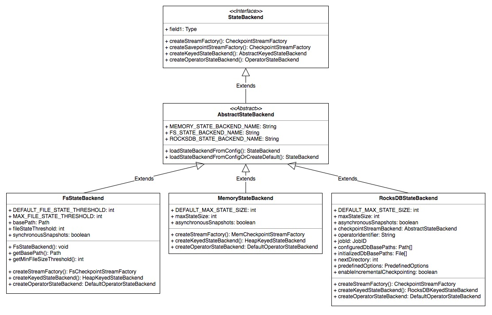

前言
代码参考版本: 1.5-SNAPSHOT
核心模块
Flink 的分布式快照存储部分设计抽象出了大致 5 个层次：
- 最底层是快照的物理存储，包括内存和文件系统两种形式
- 再上层是 CheckpointStreamFactory：封装了具体的存储交互，也就是内存/文件系统读写
- 再上层是 StateBackend：封装了工作状态的存储逻辑，包括内存和 RocksDB 两种形式
- 再上层是 KeyedStateBackend：封装了快照的读写细节，快照分区策略等
- 再上层是 State：封装了与 KeyedStateBackend 交互时状态的 val 序列化/反序列化 等逻辑
还有一个 StateContext 比较特殊，它不提供快照功能，只提供临时的状态读写，下面会讲到
核心模块的总体交互图:
StateSnapshotContext
StateSnapshotContext 接口对用户提供了不被托管的工作状态 Raw State 的读写， Flink 的快照包括两种类型：被系统 StateBackend 托管的、不被托管自己写的。StateSnapshotContext 提供了算子自己写的快照流，它有一个默认实现 StateSnapshotContextSynchronousImpl，用户可以通过该实现拿到如下信息：
- checkpoint-id: 当前 checkpoint 的 id，是一个单调递增的 long 型值
- checkpoint-timestamp: 当前 checkpoint 的时间
- KeyedStateCheckpointOutputStream: 带 key 的状态 CheckpointStateOutputStream
- OperatorStateCheckpointOutputStream: 不带 key 的算子自己的 CheckpointStateOutputStream
其中 KeyedStateCheckpointOutputStream/OperatorStateCheckpointOutputStream 是在内部 CheckpointStreamFactory 基础上提供的高层抽象，可以将快照内容写入，而屏蔽了底层的实现细节[包括快照的 partition、句柄的管理等]，下面会一起介绍。
特别注意的是，KeyedStateCheckpointOutputStream/OperatorStateCheckpointOutputStream 继承了 NonClosingCheckpointOutputStream 接口，也就是内部输出流一旦打开，就不允许调用 close 接口直接关闭，它们的 close 由系统来管理。
KeyedStateCheckpointOutputStream/OperatorStateCheckpointOutputStream 属于框架之外【不通过 StateBackend 管理】的状态，也叫 Raw State ，通过它们读写的 state 不会被定期快照，同时它们封装了状态 分区 的逻辑，可以对状态 partition，这里做下介绍：
Raw State/Stream
Raw State Stream 是不被 Flink 框架管理的，用户自己写的 keyed-operator 状态，用户通过 StateSnapshotContext 拿到流之后便可以进行状态存取了。
带 key 的 raw 状态流： KeyedStateCheckpointOutputStream，使用 KeyGroup 来管理分区，每个分区对应一个 KeyGroup，每个 KeyGroup 的写入状态 offset 在底层的存储媒介上连续，多个分片组合的 KeyGroup 使用 KeyGroupRange 来管理，KeyGroup 和 offset 对应关系由 KeyGroupRangeOffsets 管理。文件、KeyGroup、offset 的关系如下图：
算子自己写 raw 状态流：OperatorStateCheckpointOutputStream，直接保存了 partition 和 offset 的对应关系，每个 partition 在底层存储的写入 offset 也是连续的。
CheckpointStreamFactory/CheckpointOutputStream
CheckpointStreamFactory/CheckpointOutputStream 接口提供了一套基层的状态存储的基础实现，StateBackend 的状态存取都是封装在这个实现之上的。
Checkpoint 的 CheckpointStateOutputStream 统一由 CheckpointStreamFactory 来管理，接口类 CheckpointStreamFactory 定义了获取 CheckpointStateOutputStream 的接口函数，也通过内部类的方式定义了抽象类 CheckpointStateOutputStream，依据 checkpoint 底层存储媒介的不同，CheckpointStateOutputStream 大致有以下几种类型:
- FsCheckpointStreamFactory/FsCheckpointStateOutputStream: 将 checkpoint 写入[分布式]文件系统中
- MemCheckpointStreamFactory/MemoryCheckpointOutputStream: 将 checkpoint 写入内存
- FsSavepointStreamFactory: 与 FsCheckpointStreamFactory 基础实现一致，只是复用了 savepoint 目录作为快照目录
CheckpointStreamFactory 的继承关系如下图:
可以看到，CheckpointStreamFactory 的实现支持了文件系统和内存两种，特别地，对于 FsCheckpointStreamFactory，支持按 buffer 写入文件中，具体的策略是：
- 支持用户自定义 buffer 大小，默认的最小大小为 4kb
- 支持写单个 byte：如果 buffer 已满，会先执行 flush 操作，将 buffer 中的数据清空并全部 spit 到磁盘，在写入该 byte
- 支持写 byte[]：如果 byte[] 的长度小于 buffer 的 1/2，先写 buffer，[如果写满的话依然执行 flush 操作]，后继续写 buffer
- 支持关闭文件流并拿到文件句柄，期间有任何异常发生都会清空内存数据及磁盘状态文件
- 底层状态文件的 path pattern 为：file-scheme/checkpoint-root-dir/job-id/chk-id/uuid
CheckpointOutputStream 继承自内部的 FSDataOutputStream，FSDataOutputStream 继承自 java/OutputStream，具体的继承关系如下:
上图中 FSDataOutputStream 是继承关系中被继承最多的抽象类，也是最核心的接口，它定义了核心接口的语义实现：
- getPos：获取写出流的当前 index [从 0 开始计数]
- flush：将所有 buffer 中数据 flush 到输出流中，单次 flush 并不保证数据的完成性，而是由
sync()和close()接口保证 - sync：强制 flush 所有数据到物理磁盘
- close：关闭输出流，该方法执行后，必须保证已写入的数据持久化并且可见，这就意味着，此方法必须阻塞等待数据的持久化语义实现，如果 close 期间发生异常，持久化/可见性 语义将得不到保证
这里所介绍的通过 CheckpointStreamFactory 拿到的 XXXStateCheckpointOutputStream 属于内部使用的基础输出流，它只提供 byte/byte[] 写入类型，因此它主要被用作以下三种用途：
- JobManager checkpoint 存储以及 metadata 的恢复
- 被 keyed- state backend 用来做底层状态存储
- 被 operator state backend 用来做底层状态存储
上面提到 Flink 内部通过 StateSnapshotContext 拿到高层抽象 KeyedStateCheckpointOutputStream/OperatorStateCheckpointOutputStream，其背后的调用链是：
-> StateSnapshotContext.getRawXXXOperatorStateOutput()
-> CheckpointStreamFactory.createCheckpointStateOutputStream()
-> CheckpointStateOutputStream.write()/flush()
-> HadoopDataOutputStream/LocalDataOutputStream.write()
KeyedStateCheckpointOutputStream/OperatorStateCheckpointOutputStream 面向用户，用户并不会接触到 HadoopDataOutputStream/LocalDataOutputStream 这些底层实现，而后者继承自 CheckpointStreamFactory 中定义的 CheckpointStateOutputStream。并且通过 KeyedStateCheckpointOutputStream/OperatorStateCheckpointOutputStream 写入的状态不被托管，不会快照。
如果是受托管的状态，就需要考虑快照，涉及更多的细节
比如数据自身的序列化/反序列化、状态的存储方式、快照的形式等等，这些通过 CheckpointStreamFactory 提供的基础服务流是办不到的，Flink 提供了另外一层抽象来解决这个问题：
那就是：StateBackend
StateBackend
一个 StateBackend 定义了流程序状态的存储和快照的形式，不同于 RawState ，被 StateBackend 管理的状态会定期进行分布式快照，典型的基础实现[仅仅存储的方式]有：
- MemoryStateBackend：将工作状态保存在 TaskManager 内存中，并快照到 JobManager 的内存
- FsStateBackend：将工作状态保存在 TaskManager 内存中，并快照到文件系统[HDFS/Ceph/S3/GCS]
- RocksDBStateBackend：将工作状态保存在 RocksDB 中，并快照到文件系统[类似于 FsStateBackend]
具体的继承关系如下：

从上图可以了解到，StateBackend 提供了工厂方法来创建 keyed-/operator state backend，keyed-/operator state backend 定义了工作状态的存储、快照的具体策略，并且走的是另外一套接口和继承：KeyedStateBackend。这个接口与 StateBackend 没有任何关联，它是真正用户可以接触到的 backend，用户可以通过 KeyedStateBackend 接口拿到不同类型的 State，来读写状态数据。
StateBackend 也提供了 CheckpointStreamFactory 工厂方法，通过 CheckpointStreamFactory 可以拿到 CheckpointStateOutputStream 作为 keyed-/operator state backend 的基础写出流。不同类型的基础写出流通过不同的 StateBackend 的实现拿到。
KeyedStateBackend
上面提到的 KeyedStateBackend 已经是 statebackend 最高层的封装，也是用户可以直接接触的 backend，KeyedStateBackend 的继承关系如下：
可以看到，KeyedStateBackend 暴露了一整套获取各种类型 State 的接口，用户通过不同的 State 进行状态的读写，而无需再关心状态本身的 partition、快照的逻辑。partition、快照的逻辑封装在不同的 KeyedStateBackend 实现中。State 这一层的实现我们先放一放，这里先介绍 KeyedStateBackend 的实现。
这里介绍 KeyedStateBackend 的实现
RocksDBKeyedStateBackend
RocksDBKeyedStateBackend 将 state 数据存储进 RocksDB 并且在做 checkpoint 的时候将 state 写到 CheckpointStreamFactory 提供的输出流中。
KeyGroup Prefix
后面讲 State Partiton 的时候会介绍 KeyGroup 的概念，建议先跳到后面了解下
与 HeapKeyedStateBackend 不同的是，RocksDBKeyedStateBackend 底层存储 key 是 keyGroupID + 逻辑key + namespace 的组合，这种存储简化了 keyGroup 的获取逻辑，但是稍微浪费了存储。HeapKeyedStateBackend 内存中只存储逻辑 key，快照时 keyGroup id 只会写一次。
keyGroupPrefixByteCount 存在的意义：它指定了 KeyGroup 的 ID 占用的字节数。
下面这段代码的目的是将 key-group 的 id 取出：
|
|
增量快照
RocksDBStateBackend 增量快照实际的快照数据包含两部分：1. meta 数据、2. state 数据。
meta 数据直接通过 CheckpointStreamFactory 写出到快照目录。
state 数据的写入，首先会对 RocksDB 自身做一次 snapshot，后再将 checkpoint 写出到 CheckpointStateOutputStream，将 RocksDB 快照 写出到 CheckpointStateOutputStream 的实现细节：
- 在 RocksDB 的 base 目录下新建一个 chk-checkpointId 的 RocksDB 快照 目录，并将 快照 保存下来【实际为创建 hard link】，这部分的 快照 包含两种文件， sst 文件 + misc 文件，接下来就是将这部分文件写出到 CheckpointStateOutputStream
- 拿到上次 checkpoint 的 sst 文件列表【实际为 stateHandleID -> StreamStateHandle 映射关系】
- 遍历 1 中 快照 的文件列表：如果是 sst 文件，会根据 2 中的映射关系查询上次是否已做过快照，如果有，跳过快照，只将文件名【和快照句柄占位符 PlaceholderStreamStateHandle】保存下来，否则会将 sst 文件写出到 CheckpointStateOutputStream 并保存 文件名 -> 快照句柄 映射关系；如果是 misc 文件，直接将文件写出到 CheckpointStateOutputStream，并保存 文件名 -> 快照句柄 映射关系
ps: 以上每个文件都要读取内容再写出到一个单独的输出文件【占位符除外】
全量快照
RocksDBStateBackend 全量快照的整体思路是通过 CheckpointStreamFactory 拿到 CheckpointStateOutputStream 并将 RocksDB 自身的 snapshot 全量写出，主要分为以下 5 个步骤：
- 拿到 RocksDB 自身的 snapshot 对象
- 通过 CheckpointStreamFactory 拿到 CheckpointStateOutputStream 作为快照写出流
- 分别将快照的 meta 信息和数据写到 2 的输出流中
- 拿到 2 输出流的句柄，获得状态 offset，将 k-v 数据读取到 RocksDB 中，这里要注意的是快照时留下的 meta 起始标志位【标志一个新的 state 起始或者一个 keyGroup 结束】，快照恢复时需要复原
- 将 RocksDB 的快照对象及一些辅助资源释放
ps: 以上只写一个输出文件
这里描述 3 的实现细节
meta 信息通过辅助类 KeyedBackendSerializationProxy 来写入，依次写入：version 号、boolean/是否压缩、keySerializer/keySerializer-config、state 快照数量、states 快照 meta 信息列表，meta 信息列表通过辅助类 KeyedBackendStateMetaInfoSnapshotReaderWriters【主要封装了state key 和 namespace 的序列化逻辑】 写出。
kv 状态数据通过 RocksDBMergeIterator 遍历迭代，对于每个 key group 依次写 state-id、k-v pair、END_OF_KEY_GROUP_MARK、循环，如下图所示：
meta 数据：state-id 和 END_OF_KEY_GROUP_MARK 的前一个 key 会设置标志位 FIRST_BIT_IN_BYTE_MASK
增量快照恢复
TODO: 句柄从哪传来的？快照策略部分重点讲解
RocksDBStateBackend 增量快照的恢复主要依赖于增量快照拿到的快照句柄 IncrementalKeyedStateHandle，具体实现如下：
- 创建恢复的目录：RocksDB-basedir/uuid 和恢复 db
- 从 IncrementalKeyedStateHandle 拿到 state 快照 的句柄并从文件中将 sst + misc 文件的内容读取【按 buffer 读取】并复制到 1 中的目录下
- 从 IncrementalKeyedStateHandle 拿到 meta 快照 的句柄并读取 meta 信息【主要是 state 名字也就是 column 名称信息】
- 将恢复目录下的数据录入到 RocksDB 中，这里包含两种情况：多个恢复句柄或 key-group 不完全的状态数据【场景：算子并发度缩小】：由于 RocksDB 中的 key 为 keyGroupID + 逻辑key + namespace 的组合【介绍 State 的时候会细说】，这种场景下需要对 keyGroup 的合法性进行校验，只保留 keyGroup 合法的 val，因此这里的做法是首先 seek 到起始 keyGroup 偏移位置，再逐条校验并录入；只有一个恢复句柄或 key-group 完全的状态数据：直接在 baseInstance 下创建恢复目录的文件 hard link 即可
- 将恢复目录删掉
全量快照恢复
RocksDBStateBackend 全量快照的恢复简单直接，只需要将快照的写入规则读取执行一遍即可，具体实现如下：
- 创建 RocksDB 实例
- 遍历传入的 KeyedStateHandle 句柄，读取输入流
- 在 2 的每次迭代使用工具类 KeyedBackendSerializationProxy 恢复 meta 信息【column 信息】
- 在 2 的每次迭代从 KeyedStateHandle 中拿到 key-group -> offset 映射，并将数据逐一读取进 RocksDB 实例
- 将恢复目录删掉
迭代器封装
RocksDB 原生的迭代器 RocksIterator 只能指定 column，将 value 以 byte[] 形式读取，而全量快照中对于 多 key-group、多 state 的迭代遍历，有以下两种需求：
- key 的解序列化
- 多 key-group/state 同时迭代
key 的解序列化通过封装 RocksIteratorWrapper 来解决；多个 state 同时迭代的需求通过 RocksDBMergeIterator 来完成。
RocksDBMergeIterator 对多 k-v stats 的迭代顺序：先按照 KeyGroup ID 排序，在按照 state-id 排序。这里按照这样的模式来排序，做快照恢复的时候在按照相同的顺序恢复。
HeapKeyedStateBackend
与 RocksDBKeyedStateBackend 不同的是，HeapKeyedStateBackend 将 state 存储于内存之中。HeapKeyedStateBackend 通过 StateTale 抽象来表示一个 state 存储。
StateTable
由于是存储于内存之中，HeapKeyedStateBackend 将一个 state 看做一张表格，也相当于 RocksDBKeyedStateBackend 中的一个 column，StateTable 封装了快照的 meta 信息，比如 state名称、key/namespace serializer 等。
StateTable 的实现有两种：NestedMapsStateTable 和 CopyOnWriteStateTable, 前者支持高效率的 State 存取但是不支持异步快照。后者牺牲了部分存储空间但是支持异步快照。
HeapKeyedStateBackend 快照的部分这里就不介绍了，读者请自行研究
State
除了前面介绍的 KeyedStateCheckpointOutputStream/OperatorStateCheckpointOutputStream，各种类型的 State 是 KeyedStateBackend 通过接口暴露给用户的与底层 KeyedStateBackend/StateBackend 交互的最外层抽象，用户无需再关系底层的状态存储规则、具体的物理实现、快照的方式、容错、state partiton 等通用的策略。
先来看继承关系：
可以看到 InternalKVState 是其中最为核心的接口，但是这里继承关系稍微有些复杂和混乱，Flink 为什么演化出 State/InternalKVState 两套接口呢？原因是 InternalKVState 提供了只对 Flink 引擎暴露的接口比如 namespace set/get、val get、namespace merging，这些接口并不稳定，Flink 引擎希望对上层应用屏蔽，而通过 State 接口暴露出来的方法普通用户是可以使用的。
用户拿到 InternalKVState 的具体实现 HeapXXXState/RocksDBXXXState 后，便可以对背后的存储进行状态读写了，这里不再详细介绍。
StateDescriptor
State 既然是暴露给用户的，那么就需要有一些属性需要指定：state 名称、val serializer、state type info。这些属性被封装在 StateDescriptor 抽象中。用户通过 AbstractKeyedStateBackend 的接口 getXXXState() 将 StateDescriptor 传给底层 State 实现。
StateDescriptor 的继承关系如下：
State partition/动态伸缩
在介绍 KeyedStateBackend 的实现之后，我们再来介绍 Flink 是如何让快照支持算子动态扩并发的，这样更有利于对 KeyedStateBackend 实现部分的理解。
由于 KeyedStateBackend 是 task/op 级别的实例，每个 task/op 会拿着自己的 KeyedStateBackend 去做快照，我们都知道，每个 task/op 都会在运行时会处理部分的 key element【对于 KeyedStream 来说】，相应的 task-op 写出的快照状态也是只包含对应 key element 的部分，当 task-op 对应的 Operator 扩大/缩小 并发之后，之前快照的状态 key 就没有办法与当前的算子再一一对应了，这样就需要一些思路一定程度上解决这个问题。
其实无法一一对应并不是问题的关键，只要当前 key 分发到的 task/op 从相应的包含当前 key 的快照中恢复过来，继续计算的状态就是正确的。对于算子来说，并发的改变无外乎两种情况：
- task/op 增加并发：这种场景，原先一个 task: op-task-1 处理的部分 key 可能扩充到多个 task: op-task-2 op-task-3 去处理，相应的，op-task-1 分出去的 key 的处理算子 op-task-2、op-task-3 做恢复的时候就需要 op-task-1 原先的快照
- task/op 减少并发：这种场景，原先多个 task op-task-1 op-task-2 处理的部分 key 可能交给一个算子 op-task-3 来处理，这时候，op-task-3 的状态恢复就需要 op-task-1 和 op-task-2 的快照
想要 key 状态存储对算子的并发透明，就不能依赖于算子自身的并发来进行状态存储，而必须是一个常量值，Flink 选取了算子的 max parallelism 将 key 的存储划分到多个 bucket，一个 key bucket 也被叫做 KeyGroup ，每层 op 处理的所有 element 都会按照对应的 key 分到相应的 KeyGroup 下，op 对应的每个并发 task 都会分到一组 KeyGroup，也就是 KeyGroupRange，KeyGroupRange 中的 KeyGroup id 连续，这层 op 所有 task 的 KeyGroupRange 连起来的 KeyGroup 数量就是该 op 的 max parallelism。
快照恢复时，按照 task/op 当前的 KeyGroupRange 选取快照的状态句柄【上次快照的状态 KeyGroupRange 和当前 KeyGroupRange 有交集的部分】进行状态恢复；在处理 element 时，按照 element 所属 KeyGroup 分到对应的 task/op，这样两边向恒定值 KeyGroup 靠拢，便实现了状态恢复对算子并发的透明化。
这里梳理一些策略【在 AbstractKeyedStateBackend 中】：
Element 被分到哪个 KeyGroup 的策略：先对 element key 取 hashcode 再取 murmurhash 再对算子的 max parallelism 做除余 hash。所以 element 被分到哪个 KeyGroup 之和 element 的 key 有关。
task/op 被分配的 KeyGroupRange 范围策略：将 op 的 max parallelism 按照 op 当前的并发 cur parallelism 划分成连续的 id range，task/op 按照自己所属的并发 task 索引 id 被分配对应的 id range。
Element 被分给 task/op 处理的路由策略：先选出对应的 KeyGroup，再按照 2 的策略找到对应的 task/op
附一张图解释这个策略：